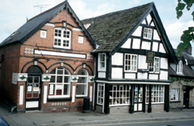
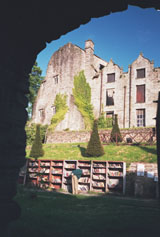
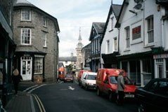

We had known early on in our plans that we'd enjoy an extra day in Hay-on-Wye. Hay is the "capital of the second-hand book trade", with dozens of used book shops. We spent both nights at "Rest for the Tired", a 16th century B&B, with a bookshop downstairs and very friendly Mary Thomas as owner. (It's the "black and white" in this photo.) I had had a sore toe for several days and was worried that it would get infected. It wasn't a blister, so I wasn't sure about using the wonderful blister remedy "Compeed" on it. We asked Mary where the surgery (health care center) was, and went there. They kindly fitted in an appointment for me for an hour later, and we took our clothes to the laundromat while we waited. The doctor, when he saw the toe, didn't seem concerned. He just said that it was clearly irritated by the all-day pressure and rubbing, and that I should protect it with Compeed, after all. We were relieved. We went back and got our clothes out of the dryer, and spent the rest of the day wandering around in the book shops. One "shop" is a set of bookshelves below the castle. It looks as if those books are left out in all weather -- at least, it was raining that day and the books were out. They cost very little, and you were supposed to put the payment in a box. The castle itself is a bookshop. It's not an old castle - Jacobean - though there had been one there in the 12th century, probably built by Maude de Braose. Mary Thomas commented to us that her house is older than the present castle!
We liked the town and had a good time just wandering around. There's a clock tower, which is typical of the border towns; we saw clock towers in several towns, all similar. We very much enjoyed our dinners both evenings in the Mallard Restaurant, which is in the Swan Inn. I don't know which of my two dinners was better, the "lentil and apricot loaf with Provencal sauce" or the "savory pancake filled with spinach and hazelnuts, with a capsicum and garlic sauce".
That evening, not surprisingly, we saw Theo and Fred again!
| Previous Day | Next Day | Home Page |